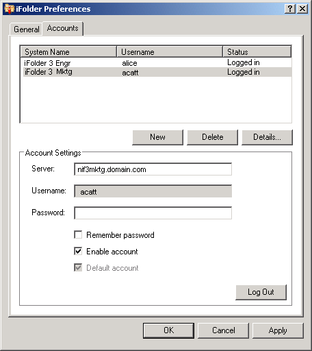

配置 iFolder 帐户
您必须配置至少一个 iFolder 帐户，然后方可创建 iFolder 或共享您的系统上的 iFolder。在任意给定的主机或服务器上，您只能创建一个帐户，不过您可以拥有多个帐户。
具有不同本地登录和用户帐户的用户可以在不同时间登录同一台计算机，使用 iFolder 在该身份下创建自己的 iFolder 集合。iFolder 只同步属于活动用户的 iFolder。
-
使用以下方法之一访问帐户设置：
- 安装后第一次启动 iFolder 时，iFolder 会提示您设置 iFolder 帐户。单击“是”将直接进入“iFolder 自选设置”>“帐户”选项卡。
- 在“通知”区域中右击 iFolder 应用程序图标
 ，然后选择“帐户”以打开“iFolder 自选设置”对话框的“帐户”选项卡。
，然后选择“帐户”以打开“iFolder 自选设置”对话框的“帐户”选项卡。
-
单击“新建”进入“帐户设置”区域。
-
指定以下值：
参数 说明 服务器
您在其上拥有帐户的 iFolder Enterprise Server 的 DNS 名称或 IP 地址。例如：svr21.example.com 或 192.168.1.1。
用户名
输入此帐户的用户 ID。既可以使用网络用户 ID（LDAP 常用名）格式，也可以使用电子邮件地址格式，这由您的 iFolder 管理员决定。
例如，如果您的姓名是 John Smith，用户 ID 是 jsmith，电子邮件地址是 john.smith@example.com，则管理员配置服务器的一个设置，该设置确定“用户名”字段应在鉴定过程中接受哪一种格式。
口令
与用户名对应的口令。
记住口令
如果选择“记住口令”，每当您登录计算机时就会自动以此 iFolder 帐户登录。有关信息，请参见登录 iFolder 帐户。
如果网络口令更改，则在下一次 iFolder 尝试登录 iFolder 帐户时，自动鉴定将以合适的方式失败。iFolder 将提示您用新口令登录，并且允许您指定并保存新口令。
启用帐户
如果选择“启用帐户”，则允许对此帐户的 iFolder 邀请、用户列表和 iFolder 进行后台同步。
默认帐户
如果选择“默认帐户”，创建 iFolder 时帐户下拉列表中将默认选择此帐户。
 -
单击“确定”或“登录”。
如果出现证书提示，则查看该证书，然后单击“确定”接受该证书。帐户显示在帐户列表中，状态为“已登录”。iFolder 开始同步任何现有的 iFolder、iFolder 通知和该帐户的用户列表。
-
单击“确定”关闭“iFolder 自选设置”对话框。
-
使用以下两种方法之一设置帐户的 iFolder：
- 如果帐户有可用的 iFolder，则弹出“iFolder 通知”讯息。单击该讯息打开“iFolder”对话框。继续设置一个可用 iFolder。
- 如果该帐户没有任何 iFolder 或者您希望立即开始添加 iFolder，则右击 iFolder 应用程序图标，然后选择“iFolder”打开“iFolder”窗口。继续创建 iFolder。